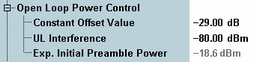

Open Loop Power Control
This section defines basic parameters related to open loop power control. Additional parameters are available with option R&S CMW-KS410, see "PRACH Settings".
For background information, refer to "Random Access Procedure".

Physical uplink settings - OLPC
Constant offset for the initial preamble power. The larger the constant value, the larger the initial preamble power.
Remote command:Estimated UL interference in dBm, contained in system information block (SIB) type 7. In a network, the UL interference can change fast. A large interference value increases the initial preamble power.
Remote command:Displays the expected power of the first preamble sent by the UE for a preamble cycle. For calculation of the value, see "Random Access Procedure".
Remote command: